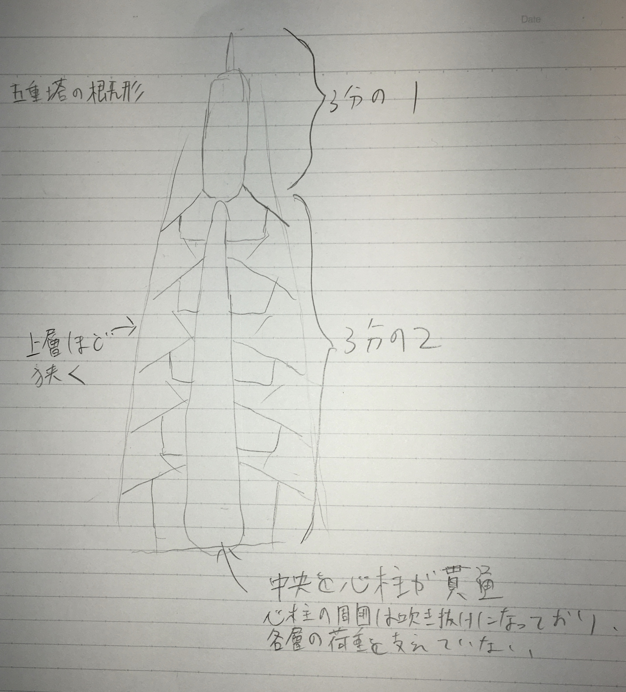

五重塔の構造

「五重塔は、独立した５つの層が下から積み重ねられた構造をしています。各層が庇の長い大きな屋根を有していること、塔身の幅が上層ほど少しずつ狭くなっていること、
中央を心柱が貫通していて、５層の頂部でのみ接していること、５層の頂部に長い相輪が取り付けられ、心柱の先端に被せられていることなど、他の建築物に見られない特徴を有しています[1]」。
「また、内部空間の利用が考慮されていないため、構造材の密度が高く一般的な建築と比べて強固な建築となっている。[2]」
「中央に心柱（しんばしら）と呼ばれる柱があります。心柱の周囲は吹き抜けになっており、各層の荷重を支えていません。塔全体の荷重は、心柱の周りにある4本の四天柱と12本の側柱によって支えられています。[3]」
これらのことを踏まえると、素人目だが、上層ほど重量が小さいから重心が低い位置にある、宗教的建築で人が生活することを考えないため耐震と見た目だけ考慮すればいい、中心にある心柱に大きく依存していないため振動を逃がしやすい、
などの理由で五重塔の耐震性は高いように思われる。